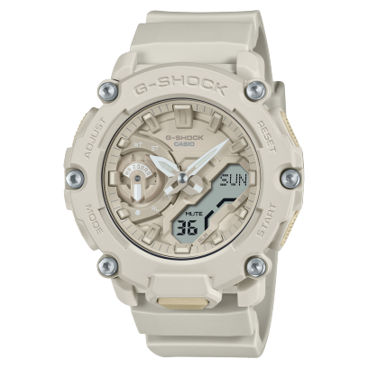

Explore the Casio Watch Collection
Casio has been at the forefront of watch innovation for decades, offering a wide range of watches that cater to various styles and functionalities. Whether you are an athlete, an adventurer, or a business professional, there's a Casio watch designed to meet your specific needs. Here’s an in-depth look at some of Casio's most iconic watch collections.
G-Shock Series - Unbeatable Toughness

Launched in 1983, the G-Shock series revolutionized the watch industry with its shock-resistant technology. Designed for durability, G-Shock watches can withstand the toughest conditions, making them a favorite among military personnel, athletes, and extreme sports enthusiasts. Featuring water resistance, world time, alarms, and solar power capabilities, G-Shock remains synonymous with rugged, all-terrain reliability.
- Key Features: Shock resistance, 200m water resistance, solar power, Bluetooth connectivity (in select models).
- Popular Models: G-Shock Classic, G-Shock Mudmaster, G-Shock Rangeman.
Edifice Series - Elegance Meets Technology


The Casio Edifice collection is designed for those who value precision and style. With chronographs, tachymeters, and smartphone connectivity, the Edifice series bridges the gap between traditional craftsmanship and modern technology. Made from stainless steel and available in a variety of sleek, professional designs, these watches are perfect for the modern businessperson who seeks both functionality and elegance.
- Key Features: Chronograph, solar-powered, Bluetooth synchronization, world time, stopwatch.
- Popular Models: Edifice Smart Chronograph, Edifice Classic.
Pro Trek Series - For the Adventurer


Built for the great outdoors, Casio's Pro Trek series is the go-to watch for adventurers, hikers, and explorers. Equipped with triple sensors—altimeter, barometer, and compass—Pro Trek watches are essential tools for navigating the wild. Many models are solar-powered, ensuring that they keep going even during long expeditions. With durable builds and an intuitive interface, the Pro Trek series helps you conquer any environment.
- Key Features: Altimeter, barometer, compass, solar power, r7gged design, GPS in advanced models.
- Popular Models: Pro Trek PRG-270, Pro Trek WSD-F30 Smartwatch.
Casio Vintage - A Timeless Classic


For those who love the nostalgia of the 80s and 90s, the Casio Vintage collection offers the best of both worlds: iconic retro designs with modern technology. With features such as LED displays, alarms, and stopwatch functions, these watches retain their vintage charm while providing practical everyday use. Whether for fashion or function, the Vintage series remains a timeless classic.
- Key Features: Retro design, digital display, water resistance, stopwatch, affordable pricing.
- Popular Models: Casio A168, Casio CA53W Calculator Watch.
Casio F91W - The Everyday Essential


Introduced in 1989, the Casio F91W quickly became one of the most beloved watches around the world due to its simplicity, affordability, and durability. Its lightweight design, accurate timekeeping, and long battery life make it perfect for everyday wear. Whether you're dressing casually or need a functional watch for daily tasks, the F91W offers incredible value.
- Key Features: Digital display, stopwatch, alarm, long battery life (up to 7 years), water resistance.
- Popular Model: Casio F91W-1 Classic.
G-Shock Smartwatch - Tough Meets Tech


Casio's G-Shock Smartwatches bring modern-day smart features into the iconic tough design of the G-Shock series. These watches offer heart rate monitoring, GPS, smartphone notifications, and activity tracking, while maintaining the shock-resistant and water-resistant build that G-Shock is famous for. Designed for athletes and tech-savvy users, these smartwatches combine functionality with the durability you expect from Casio.
- Key Features: GPS, heart-rate monitoring, Bluetooth connectivity, notifications, shock resistance.
- Popular Model: G-Shock GSW-H1000, G-Shock DWH5600.
Oceanus Series - Precision with Luxury


The Oceanus collection is where luxury meets precision. Crafted from premium materials like titanium, Oceanus watches are not just elegant but highly functional, featuring solar-powered movements and GPS synchronization for precise timekeeping. These watches are the epitome of luxury technology, appealing to those who desire both sophistication and the best in watchmaking innovation.
- Key Features: GPS synchronization, solar power, titanium construction, world time, water resistance.
- Popular Model: Casio Oceanus OCW-S5000.
Data Bank - The Original Smartwatch


The Casio Data Bank collection is a throwback to one of the earliest smartwatch-like designs. With calculator functions, phone number storage, and dual time zones, the Data Bank watches were a marvel of the 80s and still serve as a fun, functional piece of tech today. While basic by modern smartwatch standards, Data Bank watches remain a nostalgic favorite.
- Key Features: Calculator, phone number storage, dual time zones, alarm, water resistance.
- Popular Model: Casio CA53W Data Bank Calculator Watch.